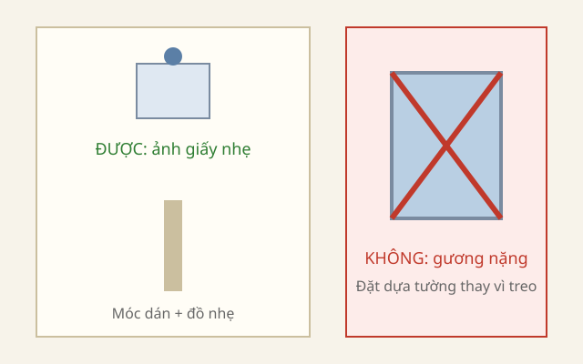

Trang trí tường nhà thuê không cần khoan
Tác giả: Nguyễn Trung Đức
Một mảng tường có tranh, có ảnh, có chút màu sắc là cách nhanh nhất để phòng thuê bớt trống trải. Nhưng với người đi thuê, mỗi món dán lên tường đều kéo theo một câu hỏi: lúc trả phòng, tường có còn nguyên không, và tiền cọc có bị trừ không? Nỗi lo đó là thật. Một mảng sơn bong theo miếng dán, một vết keo ố vàng, một góc tường tróc ra vì móc dán giật mạnh — chủ nhà đều có thể tính vào tiền sửa chữa khi bạn dọn đi, và số tiền đó lấy từ chính tiền cọc của bạn.
Bài viết này đi từ chính nỗi lo đó. Thay vì liệt kê món đồ rồi mới nhắc tới rủi ro ở cuối bài, bài sẽ bắt đầu bằng tiền cọc và hợp đồng thuê, rồi mới tới cách nhận diện tường nhà bạn, và cuối cùng mới chọn cách trang trí hợp với loại tường đó. Toàn bộ bài chỉ nói về đồ nhẹ và cách trang trí không cần khoan. Cách làm kệ sách từ ván gỗ cũ đã có trong bài “Tận dụng ván gỗ cũ làm kệ sách”.
Tiền cọc quyết định mọi thứ: đọc hợp đồng và hỏi chủ nhà trước
Tiền cọc là số tiền bạn đã đặt trước khi dọn vào, và chủ nhà có quyền trừ vào đó chi phí sửa những hư hỏng mà bạn gây ra trong thời gian thuê. Tường bị bong sơn, tróc mảng, ố keo đều có thể trở thành lý do trừ cọc. Vì vậy, trước khi dán món đầu tiên lên tường, việc cần làm không phải là mua móc dán, mà là mở hợp đồng thuê ra đọc lại.
Nhiều hợp đồng thuê ghi rõ người thuê không được khoan, dán, sơn lại tường, hoặc chỉ được làm những việc đó khi có sự đồng ý của chủ nhà. Điều khoản này nằm ở phần trách nhiệm của bên thuê hoặc phần bàn giao, hoàn trả hiện trạng. Đọc kỹ điều khoản đó trước: nó mới là thứ quyết định tiền cọc của bạn, chứ không phải lời khuyên trên mạng.
Sau khi đã đọc hợp đồng, hãy nhắn cho chủ nhà một tin ngắn: bạn định dán món gì, dán ở mảng tường nào, và cam kết sẽ gỡ sạch khi trả phòng. Tin nhắn ngắn gọn, liệt kê rõ ràng sẽ dễ được đồng ý hơn một câu hỏi chung chung. Giữ lại tin nhắn chủ nhà đồng ý, để khi trả phòng có bằng chứng rằng mình đã hỏi trước.
Có một điểm pháp lý cần nói đúng, không nói quá. Luật Nhà ở số 27/2023/QH15, Điều 131, khoản 1 quy định: "Chủ sở hữu nhà ở được cải tạo nhà ở thuộc sở hữu của mình; người không phải là chủ sở hữu nhà ở chỉ được cải tạo nhà ở nếu được chủ sở hữu đồng ý." Điều luật này nói về cải tạo nhà ở — tức là sửa chữa, thay đổi nhà ở — chứ không nói rằng dán một tấm ảnh giấy lên tường cũng phải xin phép. Dán móc nhẹ, treo ảnh giấy không phải là cải tạo theo nghĩa của điều luật này, nên bài viết này không dùng điều luật đó để kết luận rằng mọi việc dán lên tường đều cần chủ nhà cho phép. Điều quyết định trong thực tế là hợp đồng thuê của chính bạn và quy định của chủ nhà: nếu hợp đồng cấm dán, bạn phải tuân theo hợp đồng; nếu hợp đồng không cấm, bạn vẫn nên hỏi trước để giữ tiền cọc. Bài viết này không phải là tư vấn pháp luật; khi cần chắc chắn, hãy đọc hợp đồng thuê của bạn và tra cứu văn bản luật gốc.
Nếu chủ nhà trả lời không đồng ý cho bạn dán lên tường, bạn không cần cố dán cho bằng được. Bạn vẫn còn cách đặt đồ dựa tường và đặt đồ trên bàn, kệ và sàn nhà. Các cách này được nói ở phần dưới, và chúng không chạm vào tường nên không làm hỏng tường.
Tường nhà bạn thuộc loại nào?
Móc dán chỉ bám tốt trên một số bề mặt. Cùng một gói móc, dán lên tường này thì chắc, dán lên tường khác thì bong sau một đêm. Vì vậy, trước khi mua móc, bạn nên nhận diện tường nhà mình thuộc loại nào trong ba loại dưới đây. Bạn có thể nhìn bằng mắt và sờ thử bằng tay: mặt tường có phẳng không, lớp sơn có dày và chắc không, tường có ẩm không.
Tường sơn mới, mặt phẳng và khô ráo
Đây là loại tường hợp với móc dán nhất. Lớp sơn còn mới, mặt tường phẳng, khô ráo thì miếng dán có diện tích bám lớn và bám đều. Với loại tường này, bạn vẫn nên thử trước ở một góc khuất: lau sạch bụi ở góc đó, để tường khô hẳn, dán móc theo hướng dẫn trên bao bì, chờ đủ thời gian nhà sản xuất nêu rồi mới treo đồ nhẹ lên thử. Nếu móc bám chắc sau một ngày, bạn mới dán tiếp ở những chỗ khác. Nếu móc bong ra hoặc kéo theo sơn, bạn nên dừng lại và chuyển sang cách đặt đồ dựa tường.
Tường vôi bột, sơn rẻ tiền hoặc sơn đã cũ
Loại tường này có lớp sơn yếu. Vôi bột và sơn rẻ tiền bám vào tường không chắc, nên khi bạn gỡ miếng dán, lớp sơn có thể bong theo thành mảng. Tường sơn đã cũ nhiều năm cũng vậy: lớp sơn giòn, chỉ cần kéo nhẹ là tróc. Với loại tường này, bạn không nên dán trực tiếp lên tường. Thay vào đó, bạn có thể dán tranh ảnh lên một tấm bìa cứng hoặc một tấm bảng bọc vải, rồi đặt tấm bảng đó dựa vào tường hoặc đặt lên kệ. Tranh ảnh vẫn được trưng bày, nhưng tường không phải chịu keo dán. Treo đồ lên một khung gỗ rồi đặt khung dựa tường cũng là một cách, thay vì dán khung lên tường.
Tường hay nồm ẩm, tường nhà trọ lâu năm
Tường nhà trọ lâu năm, nhất là tường ở tầng thấp hoặc tường hướng ra ngoài trời, thường bị nồm ẩm vào mùa ẩm. Hơi ẩm làm keo dán khó bám, miếng dán có thể bong sau vài ngày dù lúc dán bạn thấy rất chắc. Với loại tường này, bạn nên chờ tường khô hẳn rồi mới thử dán, và tránh dán vào những đợt trời nồm. Nếu tường nhà bạn thường xuyên ẩm, bạn nên bỏ hẳn cách dán và chuyển sang cách không chạm vào tường: dùng thanh căng đặt giữa hai bức tường gần nhau để treo rèm mỏng hoặc vải trang trí, hoặc dùng rèm để che một góc bừa bộn. Khi chuyển nhà, bạn chỉ cần tháo thanh căng xuống là xong, không để lại vết trên tường.
Ba cách trang trí không khoan, chọn theo loại tường
Sau khi đã biết tường nhà mình thuộc loại nào, bạn mới chọn cách trang trí. Mỗi cách dưới đây hợp với một loại tường, và bạn nên chọn đúng cách cho đúng tường, thay vì dùng một cách cho mọi tường.
Tường sơn mới: móc dán và băng dính treo tranh
Với tường sơn mới, phẳng và khô ráo, bạn có thể dùng móc dán và băng dính treo tranh cho tranh in khung nhẹ, ảnh giấy và đồ trang trí nhẹ bằng giấy hoặc vải. Lau sạch bụi mặt tường, để khô hẳn trước khi dán, ấn giữ miếng dán đúng số giây ghi trên bao bì, rồi chờ đúng thời gian nhà sản xuất nêu trước khi treo đồ. Vạch dấu bằng bút chì mờ rồi ướm thử vị trí: miếng dán đã ép xuống thì khó chỉnh lại. Khi gỡ, bạn nên gỡ theo hướng dẫn trên bao bì, kéo chậm và đều tay, đừng giật mạnh.
Với tường sơn mới, bạn cũng có thể dùng băng washi để dán ảnh giấy lên tường rồi dán washi quanh mép ảnh để tạo thành khung. Cách làm khung washi và dây ảnh kẹp gỗ được hướng dẫn chi tiết trong bài “10 món đồ trang trí tự làm dưới 100 nghìn đồng” của website này, bạn nên xem bài “10 món đồ trang trí tự làm dưới 100 nghìn đồng” để làm theo, bài này không viết lại các bước đó. Một gợi ý khi chọn vật liệu: băng washi bóc ra thường ít để lại vết hơn băng dính thường, nên hợp với người thích thay tranh thường xuyên. Đây chỉ là gợi ý chọn vật liệu, không phải thông số đo được, và bạn vẫn nên thử ở góc khuất trước. Bạn không nên dán tranh có khung kính bằng băng washi, vì tranh kính nặng và dễ rơi.
Con số duy nhất đáng tin về tải trọng là con số in trên bao bì của chính gói móc bạn cầm trên tay. Mỗi loại móc dán có mức tải khác nhau, và bạn nên chọn loại có mức tải lớn hơn đồ bạn định treo khá nhiều, đừng dùng sát mức tải ghi trên bao bì. Bạn không nên tin vào con số tải trọng chung trên mạng, vì mỗi hãng và mỗi loại tường cho kết quả khác nhau.
Tường vôi bột hoặc sơn cũ: đặt đồ dựa tường
Với tường vôi bột, sơn rẻ tiền hoặc sơn đã cũ, cách an toàn nhất là không dán gì lên tường cả. Bạn có thể đặt khung tranh lớn dựa vào tường hoặc đặt trên kệ, khỏi phải treo. Gương toàn thân cũng hợp với cách này: bạn đặt gương đứng trên sàn, tựa nghiêng vào tường, kê hai miếng đệm cao su mỏng dưới hai chân gương để gương không bị trượt ngang khi có người chạm vào, và chọn chỗ khuất lối đi, xa cửa ra vào và xa chỗ trẻ nhỏ hay chạy nhảy. Đặt dựa tường vừa giữ được đồ lớn trong phòng, vừa không làm hỏng lớp sơn yếu.
Tường hay nồm ẩm: thanh căng, rèm và vải
Với tường hay nồm ẩm, bạn có thể dùng thanh căng đặt giữa hai bức tường gần nhau để treo rèm mỏng hoặc vải trang trí, mà không cần khoan và không cần dán. Dùng rèm để che một góc bừa bộn hoặc che kệ đồ cũng là một cách, thay vì dán đồ lên tường. Nếu tường đủ khô để móc bám, bạn có thể căng một sợi dây giữa hai móc dán, rồi kẹp ảnh, thiệp hoặc lá khô lên dây bằng kẹp gỗ nhỏ. Cách này hợp với người thích thay ảnh theo mùa, vì bạn chỉ cần thay ảnh trên dây mà không cần dán lại tường. Căng dây ở nơi không có người đi qua thường xuyên, để dây không bị vướng vào người.
Ba cách trên đều có chung một giới hạn: chúng chỉ hợp với đồ nhẹ và đồ vừa. Tranh khung kính, gương nặng và kệ sách đầy sách không thuộc nhóm này. Nếu bạn muốn treo đồ nặng, bạn nên nhờ chủ nhà hoặc nhờ thợ tư vấn cách treo an toàn, thay vì cố dùng móc dán cho đồ nặng.
Đồ nặng và giấy dán tường: hai trường hợp cần tránh
Bạn không nên treo tranh khung kính nặng, gương nặng, kệ sách và đồ điện nặng bằng móc dán. Những món này khi rơi xuống có thể làm vỡ đồ, làm hỏng sàn nhà và gây thương tích cho người ở trong phòng. Đồ nặng cũng không treo phía trên giường, phía trên bàn làm việc hoặc phía trên nơi trẻ nhỏ hay ngồi chơi. Nếu đồ rơi xuống khi bạn đang ngủ hoặc đang làm việc, bạn sẽ không kịp tránh.
Móc dán mạnh cũng không dùng để treo đồ lên tường giấy dán tường: miếng dán có thể xé giấy dán tường khi gỡ. Nếu tường nhà bạn dán giấy dán tường, bạn nên hỏi chủ nhà trước và nên thử ở góc khuất. Nếu giấy dán tường đã cũ và dễ bong, bạn nên chuyển sang cách đặt đồ dựa tường.

Cách gỡ khi trả phòng
Khi trả phòng, bạn nên gỡ đồ theo thứ tự ngược lại với lúc treo. Gỡ đồ nhẹ trước, rồi mới gỡ móc dán và băng dính. Gỡ móc dán theo hướng dẫn trên bao bì, kéo chậm và đều tay. Bạn không nên giật mạnh, vì giật mạnh dễ làm bong sơn và làm rách giấy dán tường.
Sau khi gỡ xong, bạn nên lau sạch tường, chụp ảnh tường trước và sau khi gỡ để đối chiếu khi trả phòng. Nếu tường có vết bẩn nhẹ do móc dán, bạn nên lau thử bằng khăn ẩm trước, đừng vội sơn lại khi chưa hỏi chủ nhà. Nếu tường bị bong sơn, bạn nên báo chủ nhà và hỏi cách sửa, thay vì tự sơn lại bằng màu sơn khác với màu tường cũ.
Giữ lại móc dán và dây treo còn dùng được để mang sang nhà mới. Chỉ dùng lại một chiếc móc đã gỡ khi hướng dẫn của chính loại móc đó cho phép; không phải loại móc nào cũng dùng lại được.
Kế hoạch cho cả căn phòng thuê
Trang trí tường nhà thuê hiệu quả nhất khi bạn có kế hoạch cho cả căn phòng, không phải khi bạn dán từng món một cách ngẫu nhiên. Chọn một mảng tường chính để trang trí, ví dụ mảng tường phía trên ghế hoặc phía trên bàn làm việc, và để các mảng tường còn lại trống. Chỉ chọn một hoặc hai cách trong ba cách trên cho mảng tường chính, thay vì dùng cả ba cách trong cùng một phòng.
Nghĩ tới việc tháo ra khi chuyển nhà ngay từ lúc chọn đồ. Chọn đồ nhẹ, đồ gấp gọn được và đồ có thể tháo ra trong vài phút. Tránh mua đồ cồng kềnh khó mang đi, và tránh dán quá nhiều món lên tường vì sẽ mất nhiều thời gian gỡ khi trả phòng.
Kết luận
Trang trí tường nhà thuê không cần khoan không khó, nhưng cần bạn làm đúng thứ tự: đọc hợp đồng thuê và hỏi chủ nhà trước, nhận diện tường nhà mình thuộc loại nào, chỉ treo đồ nhẹ bằng móc dán trên tường hợp với móc dán, và đặt đồ nặng dựa tường thay vì cố treo. Bạn chỉ cần nhớ ba việc: chọn cách trang trí hợp với loại tường bạn có, đọc mức tải trên bao bì của chính loại móc bạn mua, và gỡ đồ chậm rãi khi trả phòng. Làm được ba việc đó, bạn sẽ có một căn phòng thuê đẹp hơn mà vẫn giữ được tiền cọc và giữ được tường nguyên vẹn cho người thuê sau.
Nguồn tham khảo
- Quốc hội, Luật Nhà ở số 27/2023/QH15, Điều 131 (Cải tạo nhà ở), khoản 1 — "Chủ sở hữu nhà ở được cải tạo nhà ở thuộc sở hữu của mình; người không phải là chủ sở hữu nhà ở chỉ được cải tạo nhà ở nếu được chủ sở hữu đồng ý." (đọc trực tiếp văn bản luật, 23/11/2026): https://vi.wikisource.org/wiki/Lu%E1%BA%ADt_Nh%C3%A0_%E1%BB%9F_n%C6%B0%E1%BB%9Bc_C%E1%BB%99ng_h%C3%B2a_x%C3%A3_h%E1%BB%99i_ch%E1%BB%A7_ngh%C4%A9a_Vi%E1%BB%87t_Nam_2023/Ch%C6%B0%C6%A1ng_VIII — Văn bản hợp nhất đăng Công báo số 523 + 524, ngày 17-3-2025 (đối chiếu trực tiếp ngày 23/11/2026, Điều 131 khoản 1 khớp từng chữ): https://static.luatvietnam.vn/xem-noi-dung-file-van-ban-hop-nhat-14-vbhn-vpqh-2025-hop-nhat-luat-nha-o-397009-d5/uploaded/vietlawfile/2025/4/14_vbhn_vpqh_2025_110425102343.pdf.aspx
- Chợ Decor, "Decor nhà thuê không khoan tường: cách làm, giữ cọc" — gợi ý hỏi chủ nhà trước, đọc mức tải trên bao bì của chính loại móc đang dùng, và đặt đồ lớn dựa tường thay vì treo (truy cập 23/11/2026): https://chodecor.com/bai/decor-nha-thue-khong-khoan-tuong
- RDSIC, "Làm đồ handmade trang trí phòng: 10 món, không khoan tường" — ý tưởng dây căng và kẹp gỗ treo ảnh, và lưu ý không treo vật nặng phía trên giường (truy cập 23/11/2026): https://rdsic.edu.vn/blog/blog-2/lam-do-handmade-trang-tri-phong-vi-cb.html